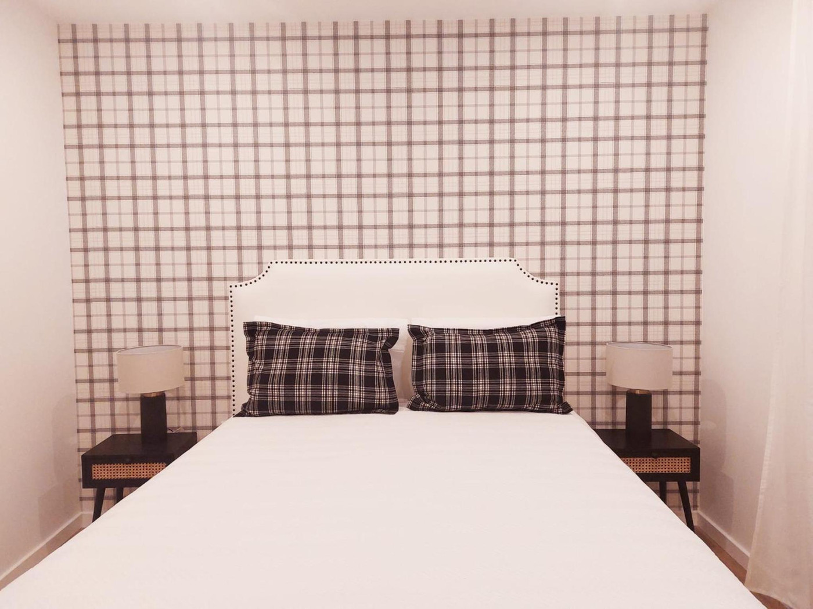

Rua Adrião Batalha, Nazaré
Ausenda’s House
A casa
2 quartos · até 4 pessoas · 60 m²
Sala01 / 12
O que tem
- Ar condicionado
- Cozinha equipada
- Máquina de café
- Máquina de lavar roupa
- Televisão por satélite
- Secador
- Casa de banho com duche
- Roupa de cama de algodão
- Jogos de tabuleiro
- Berço
- Check-in autónomo
- Apartamento inteiro
Horários
Entrada15:00 às 23:00
Saída07:00 às 11:00
- CriançasBem-vindas
- AnimaisNão são admitidos
- FumarNão é permitido
- ChegadaAutónoma, com código no teclado da porta
Onde fica
Rua Adrião Batalha 118, r/c dto, fração B, 2450-162 Nazaré
- Praia da Nazaré8 min a pé
- Mosteiro de Alcobaça12 km
- Aeroporto de Lisboa113 km
Registo RNAL a confirmar
Reservar
2 quartos · até 4 pessoas · 60 m²